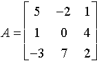
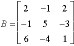
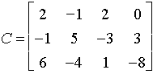
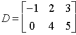
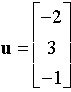

Écrire des matrices dans Matlab





�crire une matrice � rappel
Matlab est con�u pour effectuer facilement des op�rations matricielles. La commande help donne un aperçu des opérateurs matriciels disponibles dans Matlab :
>> help *
7 -3 3 0 5 1 3 3 3 3 -1 -1 2 -5 7 -9 11 1 5 1 -3 -2 0 7 1 4 2 18 -19 17 26 -17 6 -1 30 -25 10 2 2 -1 0 -12 -18 -28 2 103 -128 88 -208 295 -184 224 -272 159 103 -128 88 -208 295 -184 224 -272 159 8 -1 8 -1 125 -27 216 -64 1 La vectorisation est le concept sous-jacent � ces op�rations.